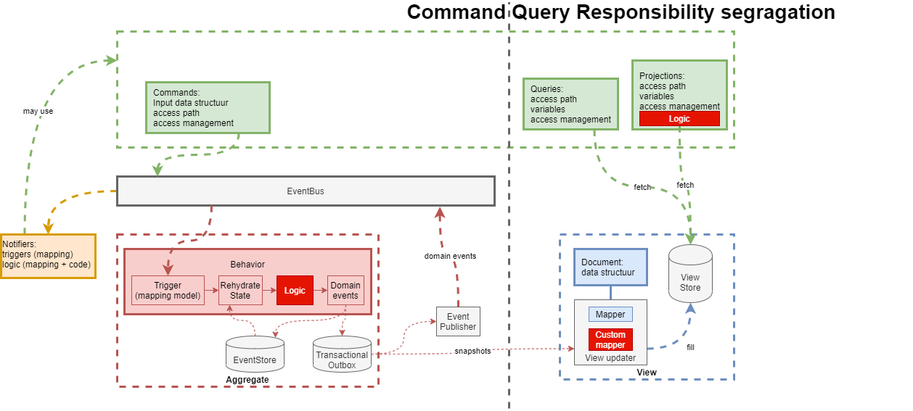

Concept overview#

In the diagram we mapped the relations between our concepts:
Commands#
Commands represent actions triggered by users or external systems. They encapsulate requests to perform specific operations within the system. They are part of the API model in green.
Aggregates and Behavior (pale red)#
- Event Sourcing: This approach ensures that domain events, which capture immutable truths about past actions, remain unchanged over time. It separates the factual recording (event sourcing) from how we interpret and reason about these events (projection).
- Technical Key: This key is immutable and crucial for maintaining consistency in the system.
Views and Queries#
- Projection of Truth: While projecting the truth to execute domain logic is essential, querying involves a different perspective. It allows deviations in the data model and supports querying based on functional keys that can change over time (green).
- Materialized Views: These are separate read models optimized for queries. They are decoupled from the write model and offer benefits like converting technical keys to functional ones, optimizing data aggregations, and establishing relationships between entities that are otherwise decoupled (blue).
Automations (also known as Notifiers)#
Notifiers orchestrate commands in response to domain events without maintaining state. They have the capability to invoke a wide range of web APIs, including AWS, REST, GraphQL, and the platform's own API (orange).
Projections#
Projections enhance queries by combining data from APIs, materialized views, and custom Python logic. They facilitate transformations such as calculations, advanced filtering, or generating time-sensitive attributes (tokens).
Custom code#
The models can be augmented by Python code (bright red) to create functionality beyond the modelling concepts.
Advanced business logic should be implemented through programming because modeling it can add more complexity than it solves, and coding is faster for this purpose. However, it must be understandable for domain experts. Python is an ideal choice because it is widely used by academics in fields like chemistry, biology, and data science. This increases the likelihood that a domain expert can learn it, especially when we add "liberating constraints" from a methodology like " tracepaper."